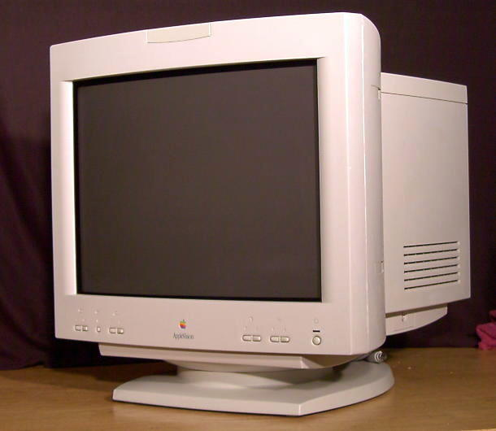

Mikä on PC?
IBM Personal Computer oli IBM-yhtiön vuonna 1981 julkaisema mikrotietokone ja tuotesarja.[1] Aluksi ammattikäyttöön vakiintunut standardi muodostui johtavaksi kotitietokoneeksi 1990-luvun alussa osin siitä syystä, että muut yritykset pystyivät valmistamaan laillisia IBM PC -yhteensopivia koneita. Useimmat nykyisin koti- ja ammattikäyttöön myytävät tietokoneet ovat IBM PC -arkkitehtuurin kanssa yhä täysin tai lähes yhteensopivia laitteisto- ja ohjelmistotasolla. IBM PC yhteensopivista tietokoneista käytetään usein vain nimitystä PC.
lähde Wikipedia
CC BY-SA 3.0, LinkkiKeskusyksikkö

Keskusyksikkö on tietokoneen laitteiston keskeinen osa, joka sisältää keskussuorittimen. Tietokoneessa voi olla useita suorittimia moniprosessoinnissa. Supertietokoneet voivat koostua useista laitekaapeista, jolloin laitteistossa ei ole vain yhtä keskusyksikköä.
Lähde: Wikipedia
By kallerna - Oma teos, Public Domain, LinkkiMonitori
Näyttö eli monitori on tietokoneen oheislaite, joka antaa käyttäjälle välitöntä visuaalista palautetta. Laitteelle on kehitetty myös termi näytin. Näytöt voidaan tekniikkansa perusteella jakaa kahteen pääluokkaan: emittoiviin eli valoa säteileviin ja ei-emittoiviin eli valoa heijastaviin.
Näppämistö

Näppäimistö on tiedon syöttämiseen tarkoitettu laite, joka koostuu sormilla painettavista näppäimistä. Näppäimistöjä on monissa teknisissä laitteissa, kuten tietokoneissa, kirjoituskoneissa ja laskimissa. Tietokoneiden näppäimistöt muistuttavat yleensä perusasettelultaan kirjoituskoneiden näppäimistöjä, mutta niissä on enemmän näppäimiä. Eri tietokoneperheissä käytetyt näppäimistöt eroavat jonkin verran toisistaan, mutta nykyisin erot ovat suhteellisen vähäiset. PC-tyyppisissä tietokoneissa on ollut käytössä kolme yleistä näppäimistöstandardia, joista nykyisin yleisimmässä on 105 näppäintä, mutta joissain uusimmissa malleissa voi olla vielä erityisiä lisänäppäimiä. PC-näppäimistöjä voi usein käyttää myös muissa koneissa.
Lähde : Wikipedia
Hiiri

Hiiri on tietokoneen osoitinlaite, joka liittyy erityisesti graafiseen käyttöliittymään. Tyypillisesti hiiri on kämmenen alle sopiva rasia, jota käyttäjä liikuttelee pöydällä (yleensä hiirimaton päällä). Hiiri rekisteröi kaksiulotteisen liikkeen ja välittää informaation tietokoneelle, jonka näytössä liikkuu osoitinsymboli vastaavasti. Hiiressä on lisäksi painikkeita (joissakin malleissa vain yksi, mutta tavallisemmin kaksi tai kolme ja joskus enemmänkin), joiden avulla käyttäjä voi valita ja käsitellä hiirellä osoittamiaan kohteita käyttöliittymässä.
Lähde : Wikipedia
By Darkone - Oma teos, CC BY-SA 2.5, Linkki